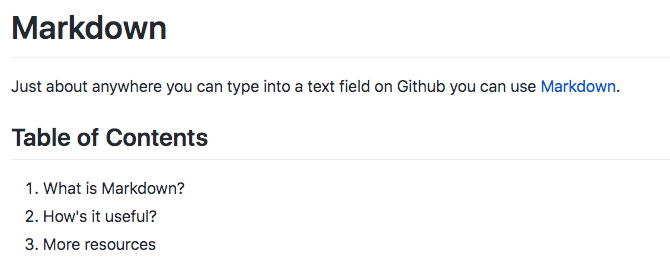

After being sent home in early March, the LL found lots of ways to get their projects working remotely. One such change the entire LL took on was shifting our primary mode of creating & recording content to Markdown, so as to easily collaborate via GitHub. That led to tutorials like this one being made to help with the transition!
